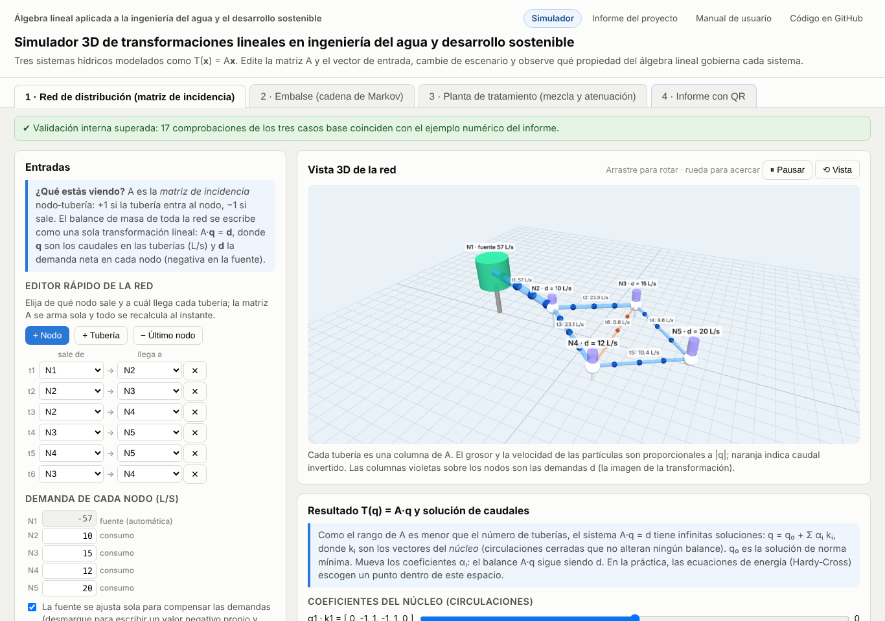
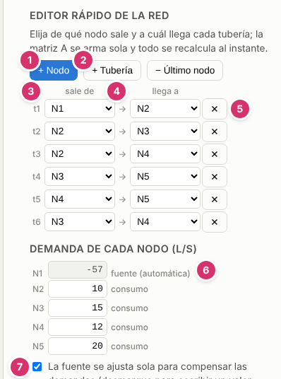
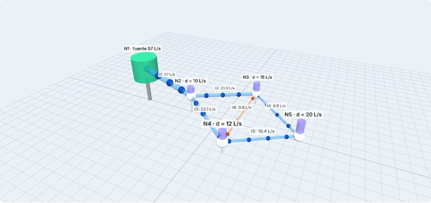
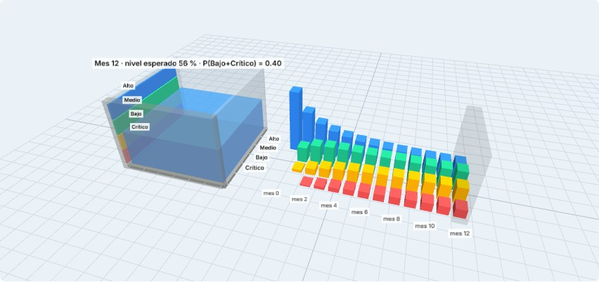
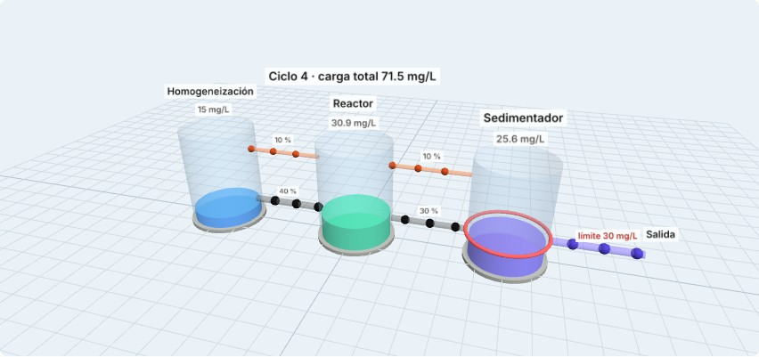
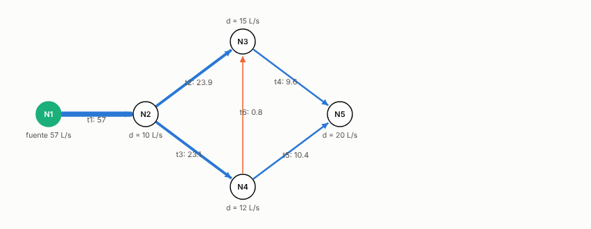
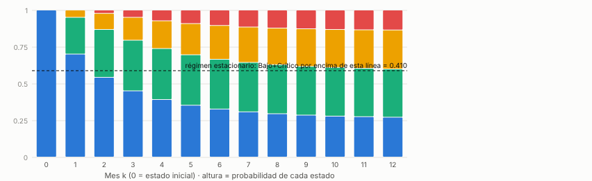
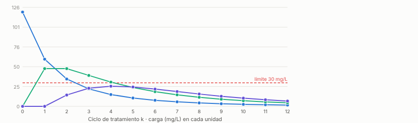

Resumen
Este proyecto aplica el concepto de transformación lineal a tres sistemas de la ingeniería del agua —una red de distribución, un embalse de abastecimiento y una planta de tratamiento— y lo materializa en un simulador web 3D de acceso abierto. Cada sistema se formula como T(x) = Ax y se identifica la propiedad del álgebra lineal que gobierna su comportamiento: el núcleo de la matriz de incidencia explica por qué el balance de masa no determina los caudales en una red con ciclos; el autovector asociado al autovalor 1 de una matriz de transición define el estado de largo plazo de un embalse, y los autovalores de una matriz de mezcla determinan si una planta atenúa un pulso de contaminante. El simulador, publicado en GitHub Pages, ofrece un editor de matrices con recálculo inmediato; el cálculo de rango, núcleo, determinante, inversa y autovalores; vistas 3D animadas; escenarios de sostenibilidad con indicadores ligados al ODS 6, y un panel que genera informes imprimibles con un código QR que reabre la misma simulación. Los resultados de cada módulo se validaron contra un cálculo independiente en NumPy (17 comprobaciones automáticas) y el código QR se verificó por decodificación. En el caso base, la red opera en el límite de su capacidad (índice de cobertura de 1.05), el embalse presenta un riesgo moderado (probabilidad estacionaria de niveles bajo y crítico de 0.41) y la planta cumple el límite de salida (pico de 25.6 mg/L). Se concluye que las transformaciones lineales ofrecen un lenguaje común para las decisiones de gestión hídrica y que el simulador, junto con su manual de usuario, facilita su enseñanza y su apropiación social.
Palabras clave: transformaciones lineales, matriz de incidencia, cadenas de Markov, autovalores, gestión del agua, ODS 6, simulación 3D, código QR
Introducción
La gestión del agua exige representar sistemas formados por muchos componentes interconectados —los nodos de una red, los estados de un embalse, las unidades de una planta— y predecir cómo responden a cambios en la demanda, el clima o la operación. El álgebra lineal ofrece el lenguaje natural para hacerlo: cuando la respuesta de un sistema es proporcional y aditiva respecto a sus entradas, el sistema completo se describe con una sola matriz A y su comportamiento queda determinado por las propiedades de la transformación lineal T(x) = Ax (Lay et al., 2016; Strang, 2016).
Planteamiento del problema
Los cursos de álgebra lineal suelen presentar las transformaciones lineales de manera abstracta, mientras que los cursos de hidráulica resuelven cada sistema con métodos particulares. Como resultado, rara vez se advierte que el balance de masa en una red, la evolución del nivel de un embalse y la remoción de contaminantes en una planta son instancias del mismo objeto matemático. Esta desconexión dificulta interpretar físicamente conceptos como el núcleo, la imagen, el rango o los autovalores, y limita su uso en decisiones de sostenibilidad. A ello se suma que los resultados de las simulaciones educativas rara vez quedan documentados de forma reproducible: es difícil que otra persona revise exactamente el mismo escenario que analizó un estudiante.
La pregunta orientadora del proyecto es: ¿cómo pueden las transformaciones lineales modelar sistemas de ingeniería del agua de modo que sus propiedades (núcleo, rango, autovalores e invertibilidad) se traduzcan en indicadores de sostenibilidad verificables, y cómo puede un simulador web hacer que esos resultados sean reproducibles y fáciles de compartir?
Justificación
El Objetivo de Desarrollo Sostenible 6 busca garantizar la disponibilidad y la gestión sostenible del agua; su meta 6.4 pide aumentar la eficiencia en el uso del recurso y asegurar la sostenibilidad de la extracción (Naciones Unidas, 2015), y la disponibilidad de agua condiciona la prosperidad y la estabilidad de las comunidades (UNESCO, 2024). Decisiones como ampliar una fuente, cambiar la regla de operación de un embalse o rediseñar una planta se apoyan en modelos matemáticos; cuando estos se formulan como transformaciones lineales, las preguntas de gestión se convierten en preguntas sobre la matriz: ¿tiene solución el balance?, ¿es única?, ¿a qué estado converge el sistema?, ¿se atenúa el contaminante? (Loucks y van Beek, 2017).
Las simulaciones interactivas favorecen el aprendizaje cuando permiten explorar, ver de inmediato las consecuencias de cada cambio y conectar representaciones abstractas con fenómenos concretos (Wieman et al., 2008). Por otra parte, la política colombiana de apropiación social del conocimiento promueve procesos en los que la ciencia se comparte, se discute y se aplica con las comunidades (Ministerio de Ciencia, Tecnología e Innovación [Minciencias], 2021). Un simulador abierto, publicado en la web y capaz de producir informes con un código QR que reabre el mismo escenario, responde a ambas necesidades: sirve en el aula y facilita llevar los resultados a otros espacios de diálogo.
Objetivos
Objetivo general
Diseñar, implementar y publicar un simulador web 3D que modele tres sistemas de ingeniería del agua mediante transformaciones lineales y que traduzca sus propiedades en indicadores de sostenibilidad reproducibles.
Objetivos específicos
- Formular la matriz de incidencia de una red de distribución y demostrar, con el núcleo y el rango, por qué el balance de masa no determina por sí solo los caudales (módulo 1 del simulador).
- Modelar la evolución mensual del nivel de un embalse como una cadena de Markov y obtener su estado estacionario a partir del autovector asociado al autovalor 1 (módulo 2).
- Representar una planta de tratamiento como una matriz de mezcla y transferencia, y relacionar sus autovalores, su determinante y su inversa con la atenuación y la trazabilidad de contaminantes (módulo 3).
- Validar el simulador con un ejemplo numérico independiente por módulo y evaluar escenarios de sostenibilidad (sequía, aumento de la demanda, sobrecarga) mediante indicadores ligados al ODS 6.
- Publicar el simulador en GitHub Pages, con un manual de usuario y un panel que genere informes con código QR para reproducir y compartir cada escenario (módulo 4).
Marco teórico
Transformaciones lineales y representación matricial
Una función T: ℝn → ℝm es una transformación lineal si cumple T(u + v) = T(u) + T(v) y T(cu) = cT(u) para todo u, v ∈ ℝn y todo escalar c (Grossman y Flores Godoy, 2019). Toda transformación lineal entre espacios de dimensión finita admite una representación matricial única respecto a las bases canónicas:
donde la columna j de A es la imagen del vector canónico ej. En los sistemas de este proyecto, las columnas de A representan el efecto de una unidad de caudal, de probabilidad o de carga contaminante sobre los componentes del sistema.
Núcleo, imagen y rango
El núcleo de T es el conjunto ker(T) = {x : Ax = 0}; la imagen, Im(T) = {Ax : x ∈ ℝn}, es el espacio generado por las columnas de A. El rango es la dimensión de la imagen, y el teorema de la dimensión establece que (Lay et al., 2016):
T es inyectiva si y solo si ker(T) = {0}, y es sobreyectiva si rango(A) = m. En el balance de una red, un vector del núcleo es una circulación de caudal que no altera ninguna demanda; por tanto, un núcleo no trivial significa que el balance de masa admite infinitas soluciones.
Determinante, inversa y composición
Si A es cuadrada, T es invertible si y solo si det(A) ≠ 0; en ese caso, x = A−1T(x) recupera la entrada a partir de la salida. La composición de transformaciones corresponde al producto de matrices: aplicar k veces la misma transformación equivale a multiplicar por Ak (Strang, 2016). Esta propiedad permite encadenar meses de operación de un embalse o ciclos de tratamiento de una planta.
Autovalores y autovectores
Un escalar λ es autovalor de A si existe v ≠ 0 tal que Av = λv. Para la evolución iterada xk+1 = Axk, el comportamiento de largo plazo depende del autovalor de mayor módulo: si todos cumplen |λ| < 1, la secuencia tiende a cero (atenuación); si existe λ = 1, el sistema converge a su autovector asociado (estado estacionario). Para matrices estocásticas por columnas —entradas no negativas y columnas que suman 1—, el teorema de Perron–Frobenius garantiza que λ = 1 es autovalor y que, si la matriz es irreducible, el autovector asociado es único y positivo (Lay et al., 2016).
Sistemas hídricos modelados
La matriz de incidencia nodo‑arco de un grafo dirigido codifica la topología de una red y transforma el vector de caudales en el vector de balances nodales, base del análisis de redes de distribución (Sotelo Ávila, 1997). Las cadenas de Markov se emplean en la planificación de recursos hídricos para describir estados de almacenamiento de embalses y secuencias de sequía (Loucks y van Beek, 2017). Los modelos de compartimentos para plantas de tratamiento representan cada unidad como un volumen con mezcla y remoción, cuyo acoplamiento es lineal cuando la cinética es de primer orden (Tchobanoglous et al., 2014).
Enlaces reproducibles y códigos QR
Para que un escenario sea reproducible basta con que su descripción completa —matrices, vectores y parámetros— viaje junto con la dirección del simulador. El identificador de fragmento de una URL, la parte que sigue al signo #, lo interpreta solo el navegador y no se envía al servidor (Berners-Lee et al., 2005), de modo que puede guardar el estado de una simulación sin necesidad de bases de datos. Un código QR codifica esa dirección en una matriz de módulos claros y oscuros con corrección de errores Reed–Solomon en cuatro niveles (L, M, Q y H), que permiten recuperar aproximadamente el 7 %, 15 %, 25 % y 30 % de los datos dañados, respectivamente (International Organization for Standardization [ISO], 2015).
Modelo matemático
Sistema 1: red de distribución y matriz de incidencia
Se considera una red con n = 5 nodos (N1 es la fuente) y m = 6 tuberías. La matriz de incidencia A ∈ ℝ5×6 tiene aij = +1 si la tubería j llega al nodo i, −1 si sale de él y 0 en otro caso. Si q ∈ ℝ6 es el vector de caudales (L/s) y d ∈ ℝ5 el vector de demanda neta (negativa en la fuente), el balance de masa en todos los nodos es la transformación lineal
Tabla 1
Matriz de incidencia A de la red del caso base (filas: nodos; columnas: tuberías)
| t1 | t2 | t3 | t4 | t5 | t6 | |
|---|---|---|---|---|---|---|
| N1 | −1 | 0 | 0 | 0 | 0 | 0 |
| N2 | 1 | −1 | −1 | 0 | 0 | 0 |
| N3 | 0 | 1 | 0 | −1 | 0 | −1 |
| N4 | 0 | 0 | 1 | 0 | −1 | 1 |
| N5 | 0 | 0 | 0 | 1 | 1 | 0 |
Las tuberías son t1: N1→N2, t2: N2→N3, t3: N2→N4, t4: N3→N5, t5: N4→N5 y t6: N3→N4. El vector de demanda del caso base es d = [−57, 10, 15, 12, 20]T L/s. La hipótesis de linealidad es exacta para el balance de masa; no lo es la relación entre el caudal y la pérdida de carga, razón por la cual el balance no basta para fijar q y se requieren ecuaciones de energía (método de Hardy–Cross). El indicador de sostenibilidad es el índice de cobertura, IC = capacidad de la fuente / demanda total.
Sistema 2: embalse como cadena de Markov
El nivel del embalse se clasifica en cuatro estados (Alto, Medio, Bajo y Crítico). El vector xk ∈ ℝ4 contiene la probabilidad de cada estado en el mes k, y A es la matriz de transición estocástica por columnas, donde aij es la probabilidad de pasar del estado j al estado i en un mes:
Tabla 2
Matriz de transición A del embalse en el caso base (columna: estado de origen; fila: estado de destino)
| Alto | Medio | Bajo | Crítico | |
|---|---|---|---|---|
| Alto | 0.70 | 0.20 | 0.05 | 0.00 |
| Medio | 0.25 | 0.55 | 0.25 | 0.10 |
| Bajo | 0.05 | 0.20 | 0.50 | 0.40 |
| Crítico | 0.00 | 0.05 | 0.20 | 0.50 |
El estado de largo plazo es el vector estacionario π que satisface Aπ = π, es decir, el autovector de λ = 1 normalizado para que sus componentes sumen 1. El indicador de sostenibilidad es la probabilidad estacionaria de los niveles Bajo y Crítico, comparada con un umbral aceptable (0.30 en el caso base). El segundo autovalor en módulo, |λ2|, mide la memoria del sistema: la diferencia respecto a π decae como |λ2|k.
Sistema 3: planta de tratamiento como matriz de mezcla y atenuación
La planta tiene tres unidades en serie con recirculación parcial: homogeneización, reactor y sedimentador. El vector xk ∈ ℝ3 es la carga contaminante (mg/L) de cada unidad al final del ciclo k, y aij es la fracción de la carga de la unidad j que pasa a la unidad i durante un ciclo. La fracción removida en la unidad j es 1 − Σi aij, y la dinámica vuelve a ser xk+1 = Axk.
Tabla 3
Matriz de mezcla y transferencia A de la planta en el caso base
| desde Homog. | desde Reactor | desde Sedim. | |
|---|---|---|---|
| Homogeneización | 0.50 | 0.10 | 0.00 |
| Reactor | 0.40 | 0.50 | 0.10 |
| Sedimentador | 0.00 | 0.30 | 0.60 |
Las sumas de columna son 0.90, 0.90 y 0.70: cada ciclo remueve el 10 %, el 10 % y el 30 % de la carga de cada unidad. Si todos los autovalores cumplen |λ| < 1, Ak → 0 y cualquier pulso se atenúa; el autovalor dominante fija la velocidad del decaimiento. Como det(A) ≠ 0, la transformación es invertible y la carga de entrada puede reconstruirse a partir de la medida de salida (trazabilidad). El indicador de sostenibilidad es el pico de carga en el sedimentador, comparado con un límite normativo de referencia de 30 mg/L que puede ajustarse según la norma aplicable (Ministerio de Ambiente y Desarrollo Sostenible, 2015).
Tabla 4
Correspondencia entre las propiedades de la transformación lineal y su significado hídrico
| Propiedad | Red de distribución | Embalse (Markov) | Planta de tratamiento |
|---|---|---|---|
| Columnas de A | Tuberías | Estado de origen | Unidad de origen |
| Núcleo | Circulaciones en los ciclos | Trivial (A invertible) | Trivial (A invertible) |
| Rango | Conectividad (n − 1) | 4 | 3 |
| Autovalor dominante | No aplica | λ = 1 (estado estacionario) | |λ| < 1 (atenuación) |
| Determinante e inversa | No aplica (A no es cuadrada) | Reconstrucción del mes previo | Trazabilidad de la entrada |
| Composición Ak | No aplica | k meses de operación | k ciclos de tratamiento |
| Indicador (ODS 6) | Índice de cobertura | P(Bajo + Crítico) en π | Pico de salida frente al límite |
Metodología
El proyecto se desarrolló en siete fases:
- Acotación. Se eligieron tres sistemas representativos de la gestión del agua que admiten una formulación lineal exacta (balance de masa) o aproximada (transiciones y remoción de primer orden).
- Formulación. Para cada sistema se definieron los espacios de entrada y salida, la matriz A y las propiedades con significado físico (Tabla 4).
- Cálculo de referencia. Los casos base se resolvieron de forma independiente en Python con NumPy (rango por descomposición en valores singulares, autovalores con el algoritmo QR e inversa por eliminación gaussiana) para obtener los valores esperados de la Tabla 7.
- Construcción del simulador. Se programó en HTML y JavaScript una biblioteca propia de álgebra lineal (forma escalonada reducida, núcleo, determinante con pivoteo, inversa por Gauss–Jordan, autovalores por iteración QR y autovectores por iteración inversa) y las vistas 3D con la biblioteca three.js (three.js authors, 2021).
- Informe con código QR. Se diseñó una codificación compacta del escenario en el fragmento de la URL y un generador de informes imprimibles que incorpora un código QR con nivel de corrección M, producido con la biblioteca qrcode-generator (Arase, s. f.).
- Publicación y documentación. El simulador, este informe y el manual de usuario se publicaron en GitHub Pages, de modo que se accede a ellos desde cualquier navegador sin instalar programas.
- Validación. Una función interna compara automáticamente 17 resultados de los tres módulos con los valores de referencia. Además, en un navegador sin interfaz gráfica se probaron la edición de matrices con recálculo inmediato, la generación del informe, la decodificación del código QR con la biblioteca de código abierto jsQR y la reproducción exacta del escenario al abrir el enlace decodificado.
Los datos de los casos base son sintéticos pero físicamente plausibles: demandas nodales de 10 a 20 L/s, probabilidades de transición mensual coherentes con un embalse de regulación anual y fracciones de remoción típicas de un tratamiento secundario. Los escenarios de sostenibilidad se construyeron modificando solo los parámetros del modelo (demandas, capacidad de la fuente, probabilidades de transición o eficiencias de remoción), para aislar el efecto de cada cambio sobre la transformación.
Diseño e implementación del simulador
Arquitectura del sitio
El sitio es estático: no tiene servidor de aplicaciones ni base de datos, y todos los cálculos se hacen en el navegador. La Tabla 5 resume los archivos publicados en el repositorio.
Tabla 5
Archivos del sitio publicado en GitHub Pages
| Archivo | Función |
|---|---|
index.html | Simulador: cuatro pestañas (red, embalse, planta e informe con QR), biblioteca de álgebra lineal, vistas 3D y validación interna. |
informe.html | Versión web de este informe, con enlaces para descargarlo en PDF y en Word. |
manual.html | Manual de usuario con instrucciones paso a paso, actividades guiadas y solución de problemas. |
documentos.css | Estilos compartidos por el informe y el manual. |
three.min.js | Biblioteca three.js r128 para las vistas 3D (licencia MIT). |
qrcode.js | Biblioteca qrcode-generator 1.4.4 para los códigos QR (licencia MIT). |
img/ | Capturas, figuras y códigos QR del informe y del manual. |
informe_transformaciones_lineales_agua (.pdf y .docx) | Este informe en formato APA, para imprimir o editar. |
manual_usuario_simulador.pdf | Manual de usuario para imprimir. |
Interfaz y módulos
La interfaz (Figura 1) organiza cada sistema en una pestaña con los mismos elementos: (a) un editor de la matriz A y del vector de entrada, con etiquetas físicas en filas y columnas y recálculo inmediato al escribir; (b) el cálculo de T(x) = Ax con la interpretación del resultado; (c) un panel de propiedades (dimensión, rango, núcleo, inyectividad, determinante, inversa, autovalores y autovectores), cada una acompañada de una frase de interpretación hídrica; (d) una vista 3D animada que puede rotarse y acercarse, complementada con gráficas 2D; (e) escenarios precargados con un indicador de sostenibilidad en tres niveles, y (f) la exportación de resultados en CSV y JSON.
Figura 1
Vista general del simulador en el módulo de la red de distribución

Para construir redes sin escribir la matriz a mano, el módulo 1 incluye un editor rápido (Figura 2): cada tubería se define eligiendo el nodo de salida y el de llegada, y la columna correspondiente de A se llena sola con −1 y +1. La fuente puede ajustarse automáticamente para compensar la suma de las demandas, de modo que d pertenezca siempre a la imagen de A; quien prefiera explorar sistemas inconsistentes puede desactivar esa opción. Los valores se escriben con punto o con coma decimal, y la tecla Enter avanza a la celda siguiente.
Figura 2
Editor rápido de la red de distribución

Vistas 3D
Las vistas 3D se construyeron con three.js y se actualizan con cada cambio en la matriz (Figuras 3 a 5). En la red, el grosor de cada tubería y la velocidad de las partículas son proporcionales al caudal, y las demandas se representan como columnas sobre los nodos. En el embalse, el nivel del agua se anima mes a mes según el valor esperado de xk, junto a una superficie de barras con la probabilidad de cada estado. En la planta, la altura del relleno de cada tanque es la carga del ciclo mostrado y un anillo rojo marca el límite normativo.
Figura 3
Vista 3D de la red de distribución en el caso base

Figura 4
Vista 3D del embalse en el mes 12 del caso base

Figura 5
Vista 3D de la planta de tratamiento en el ciclo de máxima carga de salida

Panel de informes con código QR
La cuarta pestaña genera un informe con los resultados actuales de los sistemas que el usuario elija (Figura 6). El informe incluye un resumen de indicadores de sostenibilidad, las matrices y los vectores de entrada, las tablas de resultados, las propiedades de cada transformación, capturas de las vistas 3D, las gráficas 2D y las observaciones del autor. Puede imprimirse o guardarse como PDF desde el navegador, o descargarse como un archivo HTML autocontenido (Figura 7).
Figura 6
Panel «Informe con QR» con la vista previa del informe

Por defecto, el código QR enlaza con el simulador y con todos los valores del escenario. El estado se escribe en el fragmento de la URL con una sintaxis compacta (Tabla 6): las redes cuya matriz es de incidencia se guardan como una lista de tuberías, los escenarios predefinidos se abrevian con su nombre y los números se guardan con un máximo de seis decimales. Al abrir el enlace, el simulador valida cada campo, carga los sistemas incluidos y muestra un aviso con la opción de volver a los casos base. Como el fragmento no se envía al servidor (Berners-Lee et al., 2005), el procedimiento no requiere guardar datos de los usuarios: el QR solo contiene la dirección y los valores numéricos, no el nombre del autor ni sus observaciones.
Tabla 6
Estructura del enlace que reproduce una simulación
| Parámetro | Contenido | Ejemplo |
|---|---|---|
sim | Versión del formato del enlace | sim=1 |
m | Pestaña que se abre primero | m=red |
r | Red: nodos (n), tuberías como pares salida-llegada (t) o matriz completa (m, M), demandas (d), capacidad (c), fuente manual (f) y coeficientes del núcleo (a) | r=n:5;t:1-2,2-3,2-4,3-5,4-5,3-4;d:-57,10,15,12,20;c:60 |
e | Embalse: matriz por filas (A), estado inicial (x), meses (k) y umbral (u), o el nombre de un escenario (s) | e=s:sequia;k:12;u:0.3 |
p | Planta: matriz por filas (A), carga inicial (x), ciclos (k) y límite (l), o el nombre de un escenario (s) | p=s:base;k:12;l:30 |
Nota. Los parámetros se separan con «&» y los campos internos con «;». Elaboración propia.
La longitud del enlace determina el tamaño del código. La dirección del sitio tiene 124 caracteres y genera un QR de versión 8 (49 × 49 módulos); el enlace de los tres casos base, de 184 caracteres, genera uno de versión 10 (57 × 57 módulos), y un escenario personalizado de 320 caracteres, uno de versión 13 (69 × 69 módulos). Impreso con 45 mm de lado, este último tiene módulos de 0.58 mm; para facilitar su lectura conviene imprimirlo con al menos 4 cm de lado y, si el escenario es muy grande, incluir menos sistemas en el informe.
Figura 7
Primera página de un informe generado con el panel

Validación interna
Al cargar la página, una función compara 17 resultados de los tres casos base con los valores de referencia calculados en NumPy y muestra el resultado en un aviso; si alguna comprobación falla, el aviso cambia de color e indica cuál (Tabla 7). El código de la función se incluye en el Apéndice B.
Ejemplo numérico y validación
Red de distribución
Para la matriz de la Tabla 1 se obtiene rango(A) = 4 = n − 1, lo que confirma que la red es conexa, y dim ker(T) = 6 − 4 = 2, igual al número de ciclos independientes. Una base del núcleo es k1 = [0, −1, 1, −1, 1, 0]T y k2 = [0, 1, −1, 0, 0, 1]T; se verifica que Ak1 = Ak2 = 0. Tomando N1 como nodo de referencia, la solución de norma mínima es
con ‖q0‖ = 67.49 L/s y Aq0 = d exactamente (Figura 8). Cualquier q = q0 + α1k1 + α2k2 también satisface el balance, lo que ilustra que T no es inyectiva. La suma de las filas de A es cero, de modo que la imagen de T es el hiperplano de los vectores d con suma nula: la fuente debe aportar exactamente 57 L/s. Con una capacidad de 60 L/s, el índice de cobertura es 60/57 = 1.053, en el límite.
Figura 8
Esquema de la red con los caudales de norma mínima del caso base

Embalse
Los autovalores de la matriz de la Tabla 2 son λ = 1, 0.7093, 0.3659 y 0.1748, y det(A) = 0.0454 ≠ 0. El vector estacionario es π = [0.2629, 0.3270, 0.2695, 0.1405]T, por lo que la probabilidad de largo plazo de los niveles Bajo y Crítico es 0.410, superior al umbral de 0.30 (riesgo moderado). Partiendo de x0 = [1, 0, 0, 0]T, tras 12 meses se obtiene x12 = [0.2709, 0.3287, 0.2644, 0.1360]T, ya próximo a π (Figura 9); con |λ2| = 0.709, el sistema necesita unos 14 meses para reducir al 1 % la influencia del estado inicial.
Figura 9
Evolución mensual de la distribución de estados del embalse en el caso base

Planta de tratamiento
Los autovalores de la matriz de la Tabla 3 son 0.7925, 0.5552 y 0.2523, todos menores que 1, y det(A) = 0.111. Para un pulso x0 = [120, 0, 0]T mg/L, la carga en el ciclo 4 es x4 = [15.04, 30.86, 25.63]T; el pico de salida es de 25.63 mg/L en el ciclo 4, inferior al límite de 30 mg/L (Figura 10). La carga total pasa de 120 a 71.5 mg/L en cuatro ciclos y decae asintóticamente como 0.7925k (10 ciclos para reducirla un 90 %). La inversa existe y su primera fila es [2.432, −0.541, 0.090], lo que permite reconstruir la carga del ciclo anterior.
Figura 10
Carga contaminante por unidad en cada ciclo del caso base

Tabla 7
Resultados de la validación interna del simulador frente al cálculo de referencia en NumPy
| Módulo | Magnitud verificada | Valor de referencia | Resultado |
|---|---|---|---|
| Red | rango(A); dim ker | 4; 2 | Coincide |
| Red | q0 (t1, t2) | 57.000; 23.875 | Coincide |
| Red | Aq = d; Ak = 0 | Residuo < 10−3 | Coincide |
| Red | Índice de cobertura | 1.0526 | Coincide |
| Embalse | λ1; |λ2| | 1; 0.7093 | Coincide |
| Embalse | π | [0.2629, 0.3270, 0.2695, 0.1405] | Coincide |
| Embalse | x12; det(A) | [0.2709, 0.3287, 0.2644, 0.1360]; 0.0454 | Coincide |
| Planta | Autovalores | 0.7925; 0.5552; 0.2523 | Coincide |
| Planta | x4; pico de salida | [15.04, 30.86, 25.63]; 25.63 (ciclo 4) | Coincide |
| Planta | det(A); (A−1)11 | 0.111; 2.4324 | Coincide |
Nota. Tolerancia de 10−3 (10−5 para los determinantes). Las 17 comprobaciones se ejecutan cada vez que se abre el simulador.
Resultados y análisis de sostenibilidad
Los escenarios precargados modifican los parámetros de cada transformación para evaluar la respuesta del indicador de sostenibilidad (Tabla 8).
Tabla 8
Escenarios de sostenibilidad evaluados en el simulador
| Sistema | Escenario | Cambio en el modelo | Indicador | Resultado |
|---|---|---|---|---|
| Red | Caso base | d = [−57, 10, 15, 12, 20]; capacidad de 60 L/s | IC = 1.05 | En el límite |
| Red | Demanda +30 % | d × 1.3 | IC = 0.81; déficit de 14.1 L/s | No sostenible |
| Red | Sequía | Capacidad de 45 L/s | IC = 0.79 | No sostenible |
| Red | Fuga en N4 | d(N4) = 20 L/s | IC = 60/65 = 0.92 | No sostenible |
| Embalse | Caso base | Tabla 2 | P(Bajo + Crítico) = 0.410 | Riesgo moderado |
| Embalse | Sequía prolongada | Mayor probabilidad de descenso | P = 0.719; |λ2| = 0.649 | No sostenible |
| Embalse | Gestión de la demanda | Mayor probabilidad de recuperación | P = 0.167; |λ2| = 0.626 | Sostenible |
| Planta | Caso base | Tabla 3 | Pico de 25.6 mg/L (ciclo 4) | Sostenible |
| Planta | Sobrecarga del reactor | Remoción del reactor del 0 % | Pico de 39.8 mg/L; |λ| = 0.966 | No sostenible |
| Planta | Mejora de la remoción | Remoción del 25 al 50 % | Pico de 13.1 mg/L; |λ| = 0.586 | Sostenible |
Nota. IC = índice de cobertura. P = probabilidad estacionaria de los niveles Bajo y Crítico. Los valores se obtienen directamente del simulador.
Tres lecturas se desprenden de los resultados. Primero, en la red el álgebra lineal separa con nitidez dos preguntas de gestión: la existencia de solución (d debe pertenecer a la imagen de A, es decir, la fuente debe compensar exactamente las demandas) y la unicidad (el núcleo bidimensional exige dos ecuaciones adicionales). El índice de cobertura muestra que la red del caso base no tiene margen frente al crecimiento de la demanda, las fugas o la sequía, una situación común en acueductos pequeños y directamente relacionada con la meta 6.4.
Segundo, en el embalse el estado sostenible no depende de la condición inicial sino de la matriz de transición: una sequía prolongada eleva la probabilidad estacionaria de niveles críticos de 0.41 a 0.72, mientras que unas reglas de operación que favorecen la recuperación la reducen a 0.17, por debajo del umbral. El autovalor |λ2| indica, además, que las medidas tardan alrededor de un año en reflejarse plenamente, lo que justifica planificar con anticipación.
Tercero, en la planta los autovalores constituyen un criterio de diseño compacto: mientras el autovalor dominante sea claramente menor que 1, cualquier pulso de carga se atenúa y el pico de salida cumple la norma; al anular la remoción del reactor, el autovalor dominante sube a 0.966, el pico supera el límite y el sistema tarda más de 40 ciclos en recuperarse. La invertibilidad de A permite, además, estimar la carga que ingresó a partir de la carga medida a la salida, algo útil para la vigilancia de vertimientos.
Cada fila de la Tabla 8 puede reproducirse desde el panel de informes: basta con cargar el escenario, generar el informe y compartir el código QR. En las pruebas, el enlace decodificado a partir del QR reprodujo exactamente los caudales, el vector estacionario y el indicador de la planta del escenario original, incluido el caso de una matriz de transición normalizada, que el simulador vuelve a ajustar para que sus columnas sumen 1 tras el redondeo a seis decimales.
Discusión
Los resultados muestran que tres propiedades distintas de una transformación lineal —el núcleo, el autovector de λ = 1 y el radio espectral— bastan para responder preguntas de gestión muy diferentes, lo que respalda el uso del álgebra lineal como lenguaje común en la ingeniería del agua. El simulador añade dos aspectos que un ejercicio en papel no ofrece: la exploración inmediata de escenarios y la posibilidad de documentarlos y compartirlos de forma reproducible.
Limitaciones
- Los modelos son lineales por construcción. El módulo de la red no incluye las pérdidas de carga, que son no lineales; por eso no determina los caudales reales, sino el espacio de soluciones compatibles con el balance de masa.
- La cadena de Markov supone probabilidades de transición constantes en el tiempo y no representa la estacionalidad de las lluvias.
- La planta supone cinética de primer orden y mezcla completa en cada unidad.
- Los datos de los casos base son sintéticos: los indicadores ilustran el método, no describen un sistema real.
- El tamaño del código QR crece con el de la red; en redes grandes conviene incluir menos sistemas en el informe o compartir el enlace como texto.
Trabajo futuro
- Incorporar las ecuaciones de energía (método de Hardy–Cross) para cerrar el sistema de la red.
- Estimar matrices de transición a partir de series históricas de niveles de embalses.
- Extender la planta a varios contaminantes acoplados mediante la composición de transformaciones.
- Evaluar el efecto del simulador en el aprendizaje con un diseño de preprueba y posprueba, y emplearlo en talleres de apropiación social del conocimiento.
Conclusiones
Las transformaciones lineales proporcionan un marco unificado para modelar sistemas de ingeniería del agua: la misma ecuación T(x) = Ax describe el balance de masa de una red, la evolución probabilística de un embalse y la remoción de contaminantes en una planta. En cada caso, una propiedad concreta de la transformación —el núcleo y el rango, el autovector del autovalor 1 o el radio espectral— se traduce en una decisión de gestión y en un indicador de sostenibilidad verificable.
El simulador desarrollado hace operativos estos conceptos: permite construir y editar las matrices, observar en 3D el efecto de cada cambio, calcular las propiedades con su interpretación física y evaluar escenarios de sequía, crecimiento de la demanda y sobrecarga. La validación interna de 17 comprobaciones frente a un cálculo independiente respalda sus resultados, y el panel de informes con código QR convierte cada simulación en un documento reproducible que puede revisarse, compartirse y discutirse fuera del aula.
Referencias
Arase, K. (s. f.). QR code generator library (Versión 1.4.4) [Software]. GitHub. https://github.com/kazuhikoarase/qrcode-generator
Berners-Lee, T., Fielding, R. y Masinter, L. (2005). Uniform Resource Identifier (URI): Generic syntax (RFC 3986). Internet Engineering Task Force. https://doi.org/10.17487/RFC3986
Grossman, S. I. y Flores Godoy, J. J. (2019). Álgebra lineal (8.ª ed.). McGraw-Hill.
International Organization for Standardization. (2015). Information technology — Automatic identification and data capture techniques — QR Code bar code symbology specification (ISO/IEC 18004:2015).
Lay, D. C., Lay, S. R. y McDonald, J. J. (2016). Linear algebra and its applications (5.ª ed.). Pearson.
Loucks, D. P. y van Beek, E. (2017). Water resource systems planning and management: An introduction to methods, models, and applications. Springer. https://doi.org/10.1007/978-3-319-44234-1
Ministerio de Ambiente y Desarrollo Sostenible. (2015). Resolución 0631 de 2015, por la cual se establecen los parámetros y los valores límites máximos permisibles en los vertimientos puntuales a cuerpos de aguas superficiales y a los sistemas de alcantarillado público. República de Colombia.
Ministerio de Ciencia, Tecnología e Innovación. (2021). Política pública de apropiación social del conocimiento en el marco de la ciencia, tecnología e innovación (Resolución 0643 de 2021). https://minciencias.gov.co/normatividad/resolucion-0643-2021
Naciones Unidas. (2015). Transformar nuestro mundo: la Agenda 2030 para el Desarrollo Sostenible (A/RES/70/1). Asamblea General de las Naciones Unidas.
Sotelo Ávila, G. (1997). Hidráulica general: Fundamentos (Vol. 1). Limusa.
Strang, G. (2016). Introduction to linear algebra (5.ª ed.). Wellesley-Cambridge Press.
Tchobanoglous, G., Stensel, H. D., Tsuchihashi, R. y Burton, F. (2014). Wastewater engineering: Treatment and resource recovery (5.ª ed.). McGraw-Hill Education.
three.js authors. (2021). three.js (Versión r128) [Software]. GitHub. https://github.com/mrdoob/three.js
UNESCO. (2024). Informe Mundial de las Naciones Unidas sobre el Desarrollo de los Recursos Hídricos 2024: agua para la prosperidad y la paz. UNESCO.
Wieman, C. E., Adams, W. K. y Perkins, K. K. (2008). PhET: Simulations that enhance learning. Science, 322(5902), 682–683. https://doi.org/10.1126/science.1161948
Apéndice A
Acceso al simulador y a la documentación
El simulador, este informe y el manual de usuario están publicados en GitHub Pages y pueden abrirse desde cualquier navegador actualizado, también en teléfonos y tabletas (Tabla A1). Los códigos QR de la Figura A1 llevan a cada página.
Tabla A1
Direcciones del sitio
| Recurso | Dirección |
|---|---|
| Simulador | https://apandrespenaloza.github.io/Simulador-3D-de-transformaciones-lineales-en-ingenier-a-del-agua-y-desarrollo-sostenible/ |
| Informe del proyecto | https://apandrespenaloza.github.io/Simulador-3D-de-transformaciones-lineales-en-ingenier-a-del-agua-y-desarrollo-sostenible/informe.html |
| Manual de usuario | https://apandrespenaloza.github.io/Simulador-3D-de-transformaciones-lineales-en-ingenier-a-del-agua-y-desarrollo-sostenible/manual.html |
| Repositorio (código fuente) | https://github.com/APAndresPenaloza/Simulador-3D-de-transformaciones-lineales-en-ingenier-a-del-agua-y-desarrollo-sostenible |
Figura A1
Códigos QR de acceso al simulador, al informe y al manual
Para usar el simulador sin conexión, descargue el repositorio (botón «Code» y luego «Download ZIP» en GitHub), descomprímalo y abra index.html; los archivos three.min.js y qrcode.js deben quedar en la misma carpeta.
Apéndice B
Código de la función de validación interna
La función validar() se ejecuta al cargar el simulador y compara los resultados de los tres módulos con los valores de referencia de la Tabla 7.
function validar(){
const checks=[]; const near=(a,b,t=1e-3)=>Math.abs(a-b)<t;
// Red: caso base
RED.state=RED.base(); RED.alpha=[]; document.getElementById('red-cap').value=60; let r=RED.compute();
checks.push(['red.rango=4', r.rank===4]); checks.push(['red.dimNucleo=2', r.ker.length===2]);
checks.push(['red.A·q=d', r.Aq.every((a,i)=>near(a,r.d[i]))]); checks.push(['red.q0(t1)=57', near(r.q[0],57)]); checks.push(['red.q0(t2)=23.875', near(r.q[1],23.875)]);
checks.push(['red.A·k=0', r.ker.every(k=>LA.mulv(r.A,k).every(a=>near(a,0)))]); checks.push(['red.cobertura=1.0526', near(r.cobertura,60/57)]);
// Embalse
EMB.state=EMB.base(); document.getElementById('emb-k').value=12; document.getElementById('emb-th').value=0.30; let e=EMB.compute();
checks.push(['emb.lambda1=1', near(e.eig[0].re,1)]); checks.push(['emb.lambda2=0.7093', near(e.lam2,0.7093)]);
checks.push(['emb.pi=[.2629,.3270,.2695,.1405]', [0.2629,0.3270,0.2695,0.1405].every((p,i)=>near(e.pi[i],p))]);
checks.push(['emb.x12=[.2709,.3287,.2644,.1360]', [0.2709,0.3287,0.2644,0.1360].every((p,i)=>near(e.hist[12][i],p))]);
checks.push(['emb.det=0.0454', near(e.det,0.045375,1e-5)]);
// Planta
PLA.state=PLA.base(); document.getElementById('pla-k').value=12; document.getElementById('pla-lim').value=30; let p=PLA.compute();
checks.push(['pla.eig=[.7925,.5552,.2523]', [0.7925,0.5552,0.2523].every((v,i)=>near(p.eig[i].re,v))]);
checks.push(['pla.det=0.111', near(p.det,0.111,1e-6)]); checks.push(['pla.x4=[15.036,30.864,25.632]', [15.036,30.864,25.632].every((v,i)=>near(p.hist[4][i],v))]);
checks.push(['pla.picoSalida=25.632 ciclo 4', near(p.maxSal,25.632)&&p.kmax===4]); checks.push(['pla.inv[0][0]=2.4324', near(p.inv[0][0],2.4324)]);
const fails=checks.filter(c=>!c[1]); const b=document.getElementById('banner');
if(fails.length){ b.className='fail'; b.textContent='⚠ Validación interna FALLIDA: '+fails.map(c=>c[0]).join(', '); }
else { b.className='ok'; b.textContent='✔ Validación interna superada: '+checks.length+' comprobaciones de los tres casos base coinciden con el ejemplo numérico del informe.'; }
document.getElementById('val-txt').textContent=fails.length?'fallida':checks.length+'/'+checks.length+' pruebas superadas';
return fails.length===0;
}